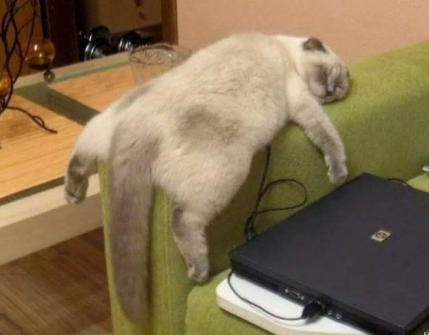

Обещаниям и планам, которые мы оставили на потом, посвящается этот праздник. В День у всех нас есть прекрасная возможность напомнить себе о том, что мы когда-то хотели сделать, но не сделали. Хотели давно начать бегать, рисовать, научиться печь блины? Да элементарно разобрать полку, на которой постоянно все валяется? Сегодня тот самый день для этого.
Этот праздник настолько редко празднуется, что текста совсем нет. Но спасибо сообществу в Одноклассниках, которое вспомнило и написало прекрасный пост.
История этого праздника неизвестна, но отмечать его может каждый, кто строит планы и верит, что когда-нибудь они обязательно исполнятся. Как сказал когда-то философ Гераклит: «Всё течёт, всё меняется». Меняется и деревня Русскинская. Когда-то на широком песчаном участке возле леса располагалась большая площадка, на которую садились вертолёты. Там же стояли и большие цистерны для заправки их горючим. Тем не менее когда-нибудь и это должно было остаться в прошлом. Теперь на этом месте располагается новая современная школа-интернат, открытая в сентябре 2009 года.
В честь праздника был сделан опрос, что люди "когда-нибудь":
|  |